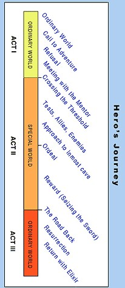

What is a good movie to you?
A good movie to me can be broken down into a few categories: The Story, the Storytelling, and the acting! Then of course bonus points for special effects.
The Story
Certain stories are not going to appeal to everyone, As I have tried several times to get my wife to watch the Lord of the Rings movies. She makes it about 30 minutes into the movies before the phone comes out or I hear snoring.
Movies are made to bring people into a new world, but that can only be done if those people are invoked. This is first done with the story itself. Stories range in depth by people who either want to just laugh for an hour and half with no other investment into the movie. Others want to be transported and submersed into the story
The Story-telling
I believe one of the worst things about movies, is when they have a great story to tell. Yet tell it in a way that leaves you frustrated! I think everyone can agree with when movies (stories) end but they don’t give you that last five minutes of wrapping up a story. Leaving you saying things like,.. ”wait what about that person” or… “whatever happened with that thing”. To me that’s not good story telling that’s lazy story telling!
I also enjoy movies that are historically told a certain way. Even though we enjoy those movies, I like movies that tell it from another perspective. Example the movie Warm Bodies, a Story about how a Zombie became human again because he fell in love with a human. Yes! I know that’s not how zombies are. But it’s a zombie movie anything can happen!
The Acting
I will accept that there is a real reason why some actors are on the A-list. They have the ability to make you believe they are who they are acting! For example, Robert Downey Jr. isn’t RDJ he is Iron Man (Toney Stark) and the late Heath Ledger isn’t really remembered for his role in a Knights Tale, rather he is embedded as the Joker!
These calibers of actors are truly amazing, yet they are not required in every block buster movie in fact they sometimes can bring down the movie. For example, Matt Dameon was perfect for Good Will Hunting. Why he as casted for the Great Wall? Is another debate!
Always Enjoy the Show